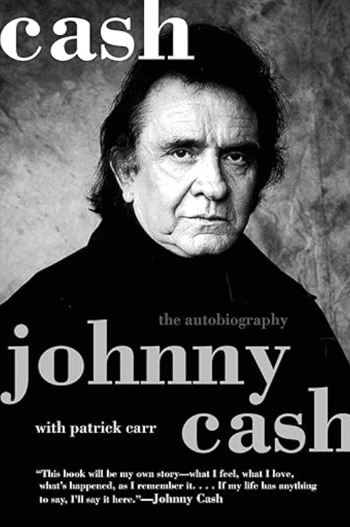
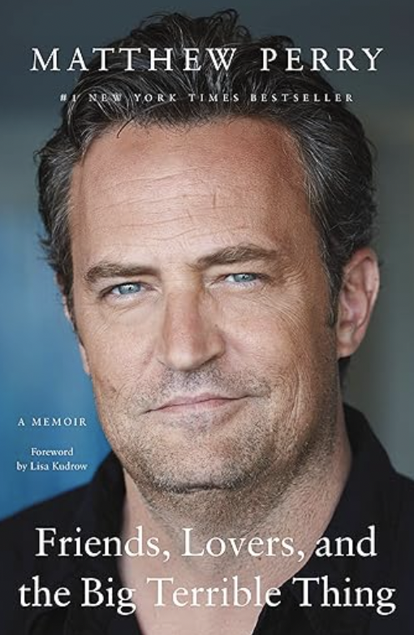
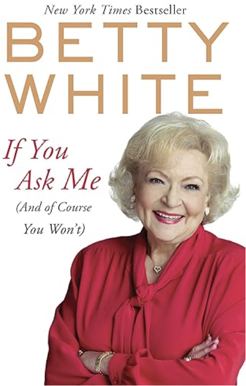

| Title |
Image |
Rating |
Description |
Amazon Link |
| Cash: The Autobiography |
 |
5/5 |
The story of Johnny Cash is told in a remarkable way. You get to hear about his experiences playing with some of the best artists in the world, his addiction issues, his wife and the highest and lowest points of his career. |
Purchase Here |
| The Road Years |
|
5/5 |
This is a continuation of Rick Mercer’s first memoir. This book covers his journey looking for all of the most beautiful things in Canada, it is captivating, interesting and funny all in one. |
Purchase Here |
| Friends, Lovers, and the Big Terrible Thing |
 |
4.5/5 |
This autobiography hits even harder after his recent death. It goes into detail about his family, friends, childhood but mostly hsi addiction issues. His hopes from this book were that it could help others, and I am sure that for anyone who reads this, it will help them. |
Purchase Here |
| If You Ask Me |
 |
4.2 |
Throughout this book you get to learn all about the life of Betty White. All about the beauty secrets, what its like to live on the red carpet, and how she managed always being in the spotlight.
| Purchase Here |
| Spare |
|
4/5 |
Prince Harry tragically lost his mother at a young age, from there he struggled with the sense of being lonely and after serving for his country he also suffered with PTSD. Now he and his wife are some of the first to try to escape the spotlight of being in the royal family. |
Purchase Here |
A Promised Land |
|
4/5 |
Barack Obama’s rise to being a country leader is a captivating story. This book breaks down everything, from him being a lost young kid to every battle he had to overcome to become the man he is now. |
Purchase Here |